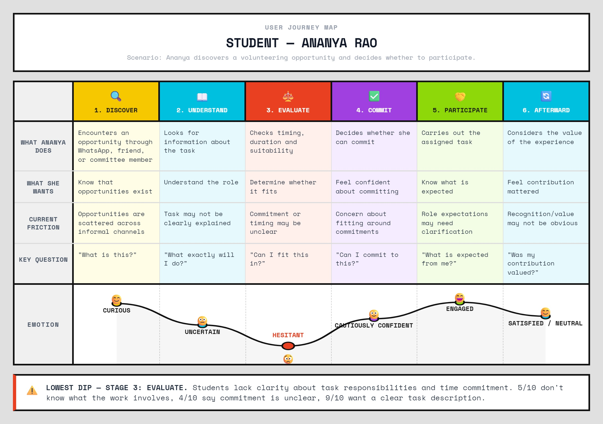
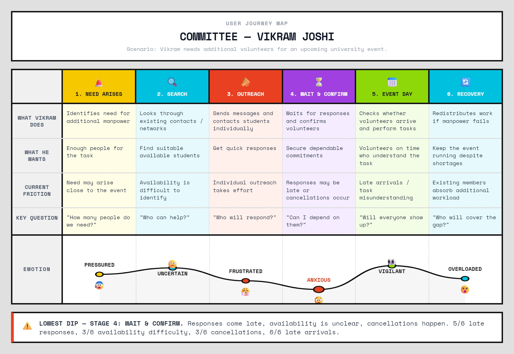
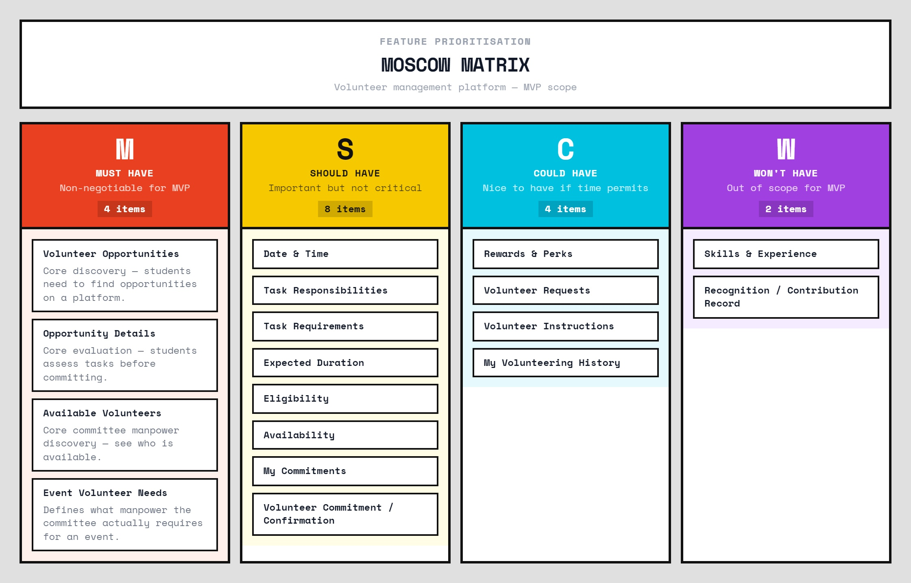
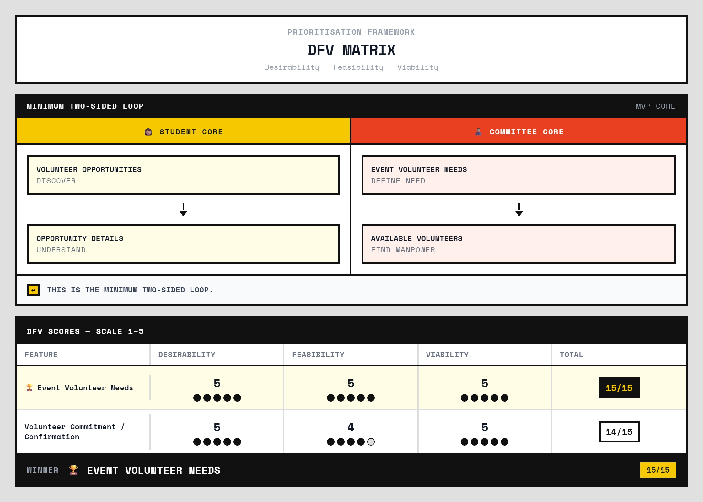

The Broken Experience
The findings below are synthesized research findings — not unsupported assumptions.
"Students interested in occasional university volunteering struggle to discover and evaluate suitable opportunities because task responsibilities and time commitments are often unclear and opportunities are discovered through fragmented channels. Meanwhile, committees struggle to identify and secure available, reliable volunteers when they need them."
- Opportunities discovered through informal and scattered channels
- Unclear task responsibilities before committing
- Unclear duration and time commitment
- Difficulty judging whether an opportunity fits existing commitments
- Preference for short, bounded volunteering — not ongoing roles
- Not necessarily interested in regular committee membership
- Responses often arrive too late to plan effectively
- Difficult to know who is actually available
- Individual outreach is time-consuming
- Volunteers may cancel or arrive late after agreeing
- Existing members absorb additional workload
- Event setup and breakdown commonly require additional manpower
Research Basis
| Group | Method | Count |
|---|---|---|
| Students | Survey respondents | n = 10 |
| Committee | Survey respondents | n = 6 |
| Committee (additional) | VP conversations (interview input) | 4 conversations |
Sample sizes are exploratory and are used for HCI sensemaking rather than statistical generalization.
Student Research Findings — n = 10
Committee Research Findings — n = 6
Proto-Personas
Initial hypotheses created before research — these are assumptions, not findings.
The Time-Constrained Student
- Limited free time
- Prefers flexible opportunities
- Interested in short tasks
- Discovers through informal channels
- Wants recognition and experience
The Overloaded Organizer
- Needs extra manpower frequently
- Uses personal contacts
- Recruits via WhatsApp / direct messages
- Faces last-minute issues
- Wants reliable volunteers
Evidence-Based Personas
Derived from research patterns: The names are composite/pseudonymous labels and do not identify individual participants.
Ananya Rao — The Flexible Contributor
Second-year student. Volunteers occasionally. Not a regular committee member.
Goals- Find suitable short-term opportunities
- Understand the work before committing
- Fit volunteering around existing responsibilities
- Gain meaningful experience and recognition
- Scattered opportunity discovery
- Unclear task expectations
- Unclear duration and commitment
- Difficulty judging suitability
- Uses WhatsApp, friends, classmates and committee contacts
- Evaluates carefully before committing
- Prefers bounded, short commitments
Vikram Joshi — The Event Manpower Coordinator
Committee VP / Core Representative.
Goals- Find additional manpower quickly
- Know who is currently available
- Reduce individual outreach burden
- Secure dependable participation
- Late responses
- Unclear volunteer availability
- Cancellations and late arrivals
- Existing members absorbing extra work
- Relies on personal contacts and WhatsApp
- Follows up when responses are insufficient
- Reorganizes tasks when volunteers do not show
Empathy Maps
SAYS = direct or reported statements | THINKS = inferred (not direct quotes) | DOES = reported or observed behaviour | FEELS = inferred (not direct quotes)
Journey Maps
Emotion was not treated as a decorative curve. The lowest point was connected back to research evidence.


Core Pain Points
Pain points were derived from evidence, not stated as assumptions.
User Stories
Derived from pain points — these generated the information requirements, not the other way around.
"As a student, I want to discover available volunteering opportunities in one clear place so that I don't have to depend on scattered messages or personal contacts."
"As a student, I want to clearly understand the task, responsibilities, duration and timing so that I can decide whether I can realistically commit."
"As a student, I want to find opportunities that fit my available time and preferred level of commitment so that volunteering does not conflict with my responsibilities."
"As a committee representative, I want to know which students are available and willing to commit to a task so that I can secure dependable manpower without repeatedly contacting people individually."
Phase 1 Traceability — Evidence to Information Requirement
18-Item Content Inventory
These are candidate information items derived from user stories — not final features.
| Category | Candidate Items |
|---|---|
| Opportunities | Available Opportunities, Opportunity Details, Date & Time |
| Task & Requirements | Task Responsibilities, Task Requirements, Expected Duration, Eligibility / Who Can Participate, Committee Event Needs |
| My Participation | Availability, My Commitments, My Volunteering History |
| Rewards & Development | Rewards & Perks, Skills & Experience, Recognition / Contribution Record |
| Volunteer Management | Volunteer Availability, Volunteer Requests, Volunteer Commitment / Confirmation, Volunteer Instructions |
Card Sort
Hybrid Card Sort / Workshop — 11 responses. We needed to understand how users naturally group volunteering information instead of imposing our own structure.
Strong Consensus Items
| Item | Category Agreed | Consensus |
|---|---|---|
| Available Opportunities | Opportunities | Strong |
| My Commitments | My Participation | Strong |
| Rewards & Perks | Rewards & Development | Strong |
| Task Requirements | Task & Requirements | Strong |
| Volunteer Instructions | Volunteer Management | Strong |
| Volunteer Availability | Volunteer Management | Strong |
| Volunteer Requests | Volunteer Management | Strong |
| Volunteer Commitment / Confirmation | Volunteer Management | Strong |
| Task Responsibilities | Task & Requirements | Strong |
| My Volunteering History | My Participation | Strong |
Ambiguous Items
Date & Time, Committee Event Needs, Skills & Experience, Recognition / Contribution Record, Eligibility / Who Can Participate
Date & Time: Interpreted differently by participants — label did not have a universally stable mental model.
Committee Event Needs: Inconsistently categorized — some placed it under Task & Requirements, others under Volunteer Management. It was carried forward and deliberately tested in the Tree Test.
Disagreements were not hidden. Ambiguous items were used to design targeted Tree Test tasks.
Mental Models from Card Sort
"The Card Sort transformed individual content items into broader user-facing mental models."
| Category | Mental Model |
|---|---|
| Opportunities | "What can I participate in?" |
| Task & Requirements | "What exactly does the work involve?" |
| My Participation | "What am I available for and what have I committed to?" |
| Rewards & Development | "What do I gain from contributing?" |
| Volunteer Management | "How are volunteers coordinated?" |
V1 Information Architecture
Hypothesis generated from Card Sort — not a validated structure. This is what was tested in the Tree Test.
+-- OPPORTUNITIES
| +-- Available Opportunities
| +-- Opportunity Details
| +-- Date & Time
|
+-- TASK & REQUIREMENTS
| +-- Task Responsibilities
| +-- Task Requirements
| +-- Expected Duration
| +-- Eligibility / Who Can Participate
| +-- Committee Event Needs
|
+-- MY PARTICIPATION
| +-- Availability
| +-- My Commitments
| +-- My Volunteering History
|
+-- REWARDS & DEVELOPMENT
| +-- Rewards & Perks
| +-- Skills & Experience
| +-- Recognition / Contribution Record
|
+-- VOLUNTEER MANAGEMENT
+-- Volunteer Availability
+-- Volunteer Requests
+-- Volunteer Commitment / Confirmation
+-- Volunteer Instructions
Tree Test
"The Tree Test tests whether users can find information in the proposed hierarchy without the distraction of visual UI."
7 CSV exports were collected. P02 and P03 were duplicate response exports. Therefore: 6 independently verifiable participants, not 7. Raw responses were retained; duplicates were excluded from the independent participant count.
Breakdown: 3 Student / Volunteer | 3 Committee / Organizer | 18 independent task observations total.
- S1: "Find currently available volunteering opportunities."
- S2: "Find when an opportunity takes place."
- S3: "Find the student's record of contributions and recognition."
- C1: "Find students who are currently available to help."
- C2: "Find the volunteer work/manpower needed for an event."
- C3: "Verify a student's commitment to an assigned task."
Tree Test Results
| Task | Description | Group | Success | Rate | Bar |
|---|---|---|---|---|---|
| S1 | Opportunity Discovery | Student | 2/3 | 66.7% | |
| S2 | Date & Time | Student | 2/3 | 66.7% | |
| S3 | Contribution Record | Student | 3/3 | 100% | |
| C1 | Volunteer Availability | Committee | 2/3 | 66.7% | |
| C2 ↓ | Event Volunteer Needs — LOWEST | Committee | 1/3 | 33.3% | |
| C3 | Volunteer Commitment | Committee | 3/3 | 100% |
| Group | Success | Rate |
|---|---|---|
| Overall | 13/18 | 72.2% |
| Students | 7/9 | 77.8% |
| Committee | 6/9 | 66.7% |
What Failed — and What We Learned
"Committee Event Needs did not have a stable mental model in V1. Participants navigated to incorrect locations."
Observed incorrect navigation paths:
"The ambiguity was consistent with the earlier Card Sort disagreement. The Tree Test did not create the problem — it exposed a structural weakness already visible in the research."
Terminology Collision — "Available"
V1 used "Available Opportunities" and "Volunteer Availability" — users could interpret "available" as describing opportunities or people. This was a terminology problem, not a cosmetic one.
Volunteer Availability
Available Volunteers
Date & Time — Restrained Interpretation
"Date & Time achieved 2/3 student task success. One participant reached Date & Time during navigation but ultimately selected Opportunity Details."
Conclusion: The evidence indicates some ambiguity, but does not justify moving Date & Time out of Opportunities. Date & Time was NOT changed without sufficient evidence.
V1 → V2 IA Pivot
Changes were made because of evidence — not preference or aesthetic judgement.
+-- Available Opportunities
TASK & REQUIREMENTS
+-- Committee Event Needs
VOLUNTEER MANAGEMENT
+-- Volunteer Availability
+-- Volunteer Opportunities
VOLUNTEER MANAGEMENT
+-- Available Volunteers
+-- Event Volunteer Needs
Evidence chain: Card Sort ambiguity + Tree Test failure (1/3) → Interpretation → Structural Pivot
Final V2 Information Architecture
Tree-Test-informed. Changes are justified by evidence.
+-- OPPORTUNITIES
| +-- Volunteer Opportunities (renamed from Available Opportunities)
| +-- Opportunity Details
| +-- Date & Time (retained — insufficient evidence to move)
|
+-- TASK & REQUIREMENTS
| +-- Task Responsibilities
| +-- Task Requirements
| +-- Expected Duration
| +-- Eligibility / Who Can Participate
|
+-- MY PARTICIPATION
| +-- Availability
| +-- My Commitments
| +-- My Volunteering History
|
+-- REWARDS & DEVELOPMENT
| +-- Rewards & Perks
| +-- Skills & Experience
| +-- Recognition / Contribution Record
|
+-- VOLUNTEER MANAGEMENT
+-- Available Volunteers (renamed; moved from Volunteer Availability)
+-- Volunteer Requests
+-- Volunteer Commitment / Confirmation
+-- Volunteer Instructions
+-- Event Volunteer Needs (moved from Task & Requirements)
Phase 2 Validation Summary
| Item | Value |
|---|---|
| Card Sort responses | 11 |
| Tree Test CSV exports collected | 7 |
| Duplicate exports (excluded) | P02 + P03 |
| Independent Tree Test participants | 6 |
| Stakeholder balance | 3 students + 3 committee |
| Independent task observations | 18 |
| Overall Tree Test success | 72.2% (13/18) |
MoSCoW Prioritization
MoSCoW was performed after IA research — not before. Not every research-backed need can be part of the first MVP.
MUST = Essential to the core user problem. | SHOULD = Important but not required for the first version. | COULD = Useful enhancement. | WON'T = Deliberately outside MVP scope, not permanently rejected.

- Volunteer Opportunities
- Opportunity Details
- Available Volunteers
- Event Volunteer Needs
- Date & Time
- Task Responsibilities
- Task Requirements
- Expected Duration
- Eligibility
- Availability
- My Commitments
- Volunteer Commitment / Confirmation
- Rewards & Perks
- Volunteer Requests
- Volunteer Instructions
- My Volunteering History
- Skills & Experience
- Recognition / Contribution Record
Defending the Four Must-Haves
"These four items form the smallest structure that supports discovery and evaluation on the student side, and manpower definition and discovery on the committee side."
Volunteer Opportunities ↓ Opportunity Details
Event Volunteer Needs ↓ Available Volunteers
The Hard Cut — Why Event Volunteer Needs over Volunteer Commitment / Confirmation
Event Volunteer Needs
Directly defines the manpower requirement that the committee needs to fill. Without it, the committee side of the minimum loop is incomplete. It is the starting point for the entire committee workflow.
Volunteer Commitment / Confirmation
Reliability is a demonstrated committee concern. However, this feature requires additional workflow and state beyond identifying available volunteers. It is valuable but should follow the core loop rather than define it.
DFV & Business Reality
DFV was used to resolve the hardest prioritization decision using explicit criteria rather than personal preference. Scale: 1–5.

Event Volunteer Needs
Volunteer Commitment / Confirmation
Final MVP — Four Essential Capabilities
"Everything else is deliberately sequenced around this core."
Volunteer Opportunities
"Discover what is available."
Opportunity Details
"Understand what the opportunity involves."
Event Volunteer Needs
"Understand what manpower the committee requires."
Available Volunteers
"Identify students who are available."
End-to-End Traceability
Limitations
Research integrity requires transparent acknowledgement of scope and constraint.
- The research sample is exploratory and not statistically generalizable.
- Tree Test analysis uses 6 independently verifiable participants after excluding duplicate exports (P02 and P03).
- V2 was not re-tested within this examination cycle. It is Tree-Test-informed, not independently validated.
- Some Card Sort items had weak or inconsistent consensus.
- "Think" and "Feel" portions of empathy maps contain inference and must not be presented as direct observation or direct quotes.
Final Conclusion
"The research indicates that the broken experience is not simply a lack of volunteering opportunities. It is an information and coordination problem affecting both sides of the interaction."
"Students need clearer information to evaluate short, flexible opportunities, while committees need visibility into available manpower and specific event requirements."
"The final V2 Information Architecture reflects observed mental models and Tree Test findings. The MVP prioritization limits the first version to four essential capabilities: discovering opportunities, understanding opportunities, defining event volunteer needs, and identifying available volunteers."